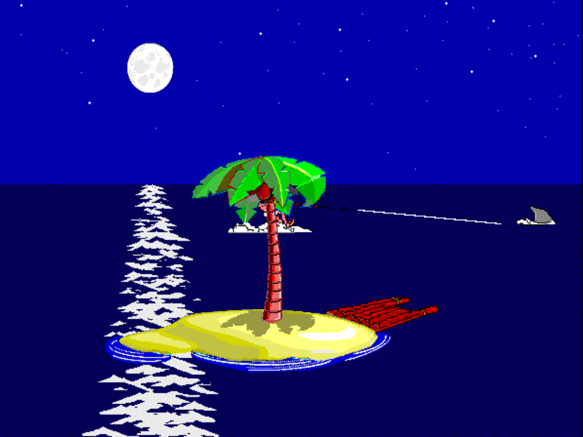

Scene · FISHING 4 validated
FISHING 4 — Hooks a shark, gets pulled around like a speedboat

LEFT_ISLAND
scene; the fgpilot path now derives that draw-offset from
story_data.h so the island baseline holds the
original ADS thread compensation.
Validated on PS1/DuckStation on 2026-05-01 after the fgpilot path was corrected to apply the original LEFT_ISLAND scene draw offset.
Pack identifiers
- ADS dispatch:
FISHING.ADS scene 4 - Slug:
fishing4
What this scene is
Johnny casts a line, hooks a shark, and the shark takes off — dragging Johnny around the ocean like a water-skier being towed by a speedboat. Confirmed by direct on-PS1 playback observation while capturing the chapter-select thumbnail; matches and sharpens the prior caption-mapping guess (the audit had HIGH confidence on the shark).
Validation
This scene clears the FISHING 1 bar — pixel-perfect visuals plus synced SFX across every applicable variant.
The important wrinkle was placement: FISHING 4 is a LEFT_ISLAND
scene, so the island baseline lives at the far-left fixed position while
the scene sprites use the original ADS thread compensation. The PS1
fgpilot path now derives that offset from story_data.h.